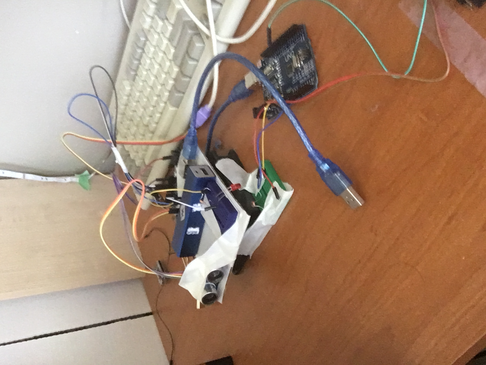
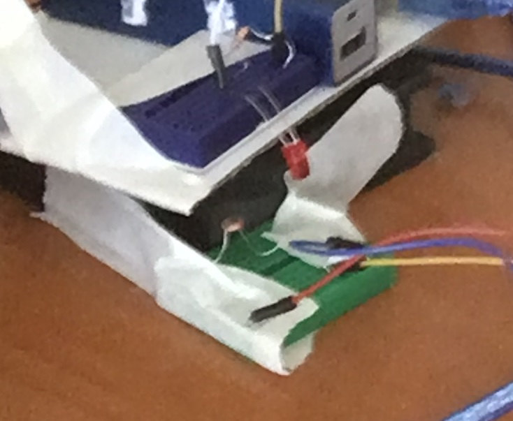

Simple SONAR 2D mapping system
This is a simple 2D rotating SONAR mapping system built around the Arduino platform. I built it in a couple of weeks from the end of May to the beginning of June of 2021.

How it works
The distance from the device to an object it is currently pointed at is determined using an HC-SR04 ultrasonic distance sensor (hence the SONAR name) connected to the Arduino on the head. The head Arduino then sends the distance value over the RF link using the RadioHead library to an RF receiver connected to the base Arduino. The base Arduino then relays that distance value over serial to the computer, where a Processing program reads the serial stream and plots an image of the device's surroundings. The head is rotated by the PC fan so that it can point the distance sensor in every direction around a circle and completely map the device's surroundings.
Design philosophy
In contrast to many other designs for similar devices floating around on the internet, I opted for increased electronic complexity to facilitate decreased mechanical complexity. Many similar devices use some form of slip ring to allow the electrical connection between the rotating head and the stationary base. I instead opted to use a 315 MHz RF link to transfer data and have a USB power bank on the rotating head for power. I did this mainly because I didn't want to make a slip ring, and I also didn't have one on hand. I also wanted to learn how to use the specific RF link module that I had with the Arduino, as they are relatively common in Arduino projects.
About the motor
The motor is simply a PC fan with the head hot-glued to the center. Initially, I had planned to just supply it power and let it spin at its natural speed, but in testing I found its natural speed to be far too fast for the distance sensor to get good readings, so I began looking for ways to decrease the speed. I first tried adding resistors in series to the fan, but I found that the fan would still speed up to a high speed unsuitable for the sensor. I then tried using a potentiometer, which allowed me to run it at lower speeds, but I had to keep manually adjusting it to keep the speed constant. I then built a simple PWM circuit with a variable duty cycle using a 555 timer and switching the current through the fan with a BJT, but I found that to be also unsuitable for low speeds. I finally settled on the base Arduino actively controlling the duty cycle of the PWM signal to the BJT in response to increases and decreases in angular speed. This allowed the fan to rotate slow enough to get a good number of data points per rotation.
Measuring angular speed
The angular speed is measured by having an LED on the rotating head and a photoresistor on the stationary base. As the LED passes by the photoresistor, its resistance drops, which increases the value read by an analog pin on the Arduino (using a resistor voltage divider circuit). If it increases above a certain pre-programmed threshold, the Arduino knows that the head has made a complete rotation and sends a special character through serial to the computer. It also adjusts the fan PWM duty cycle to keep the fan at the target angular speed. I was initially worried that the photoresistor wouldn't react fast enough to measure the angular speed of the head (rotary encoders in other products often use photodiodes), but through testing, I found it to be fast enough.

The program
The program is pretty simple. It is written in Processing, a form of Java that makes writing graphical applications very easy. It also has a lot of pre-written libraries for things like USB serial communication, which is essential for this project. The program reads what is being sent over serial and if it's a number, add it to a list. If it is the special character, iterate through the list and plot arcs with radii of the corresponding entry in the list, then clear the list. Since the special character is sent once per full rotation, the resulting image ends up being the device's surroundings. The program also displays some diagnostic information, like angular speed of the head and the number of measurements per rotation.
Future work
There are a number of things that I may change about this project in a future version. The first thing I would change is the distance sensor. While the SONAR distance sensor is cheap and easy to use with the Arduino, it is not fast or precise enough for precision mapping on a high-speed motor. A laser time-of-flight sensor would likely be fast enough for this project, and they are cheap and small enough that I could just change out the part on the device, edit the code, and it would work, so this change may come sooner rather than later. Another change I could make is using a stepper motor for the rotating head. Using a stepper motor would allow me to precisely control the speed of the rotating head without needing to measure the speed from a crude tachometer on the device. Another change I could make is by connecting the head and the base with a slip ring instead of transferring the data over an RF link. This would simplify the code and allow me to use only one Arduino, with just the connections for the distance sensor going through the slip ring.